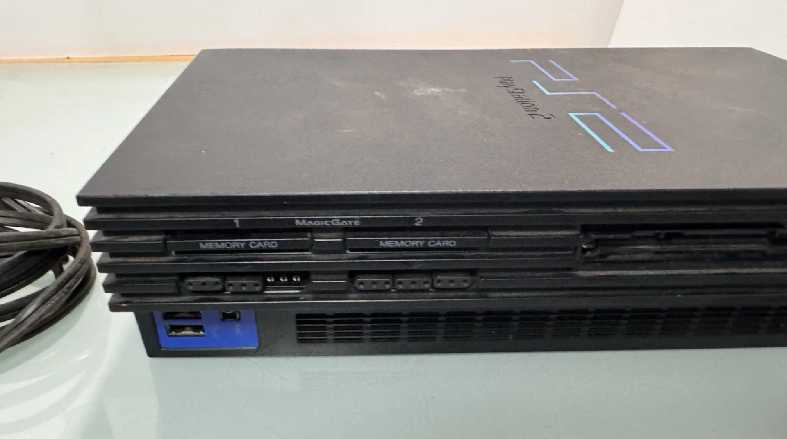
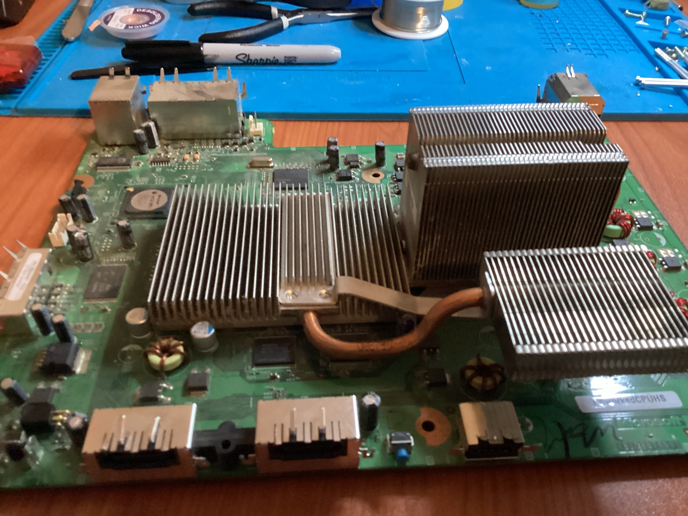
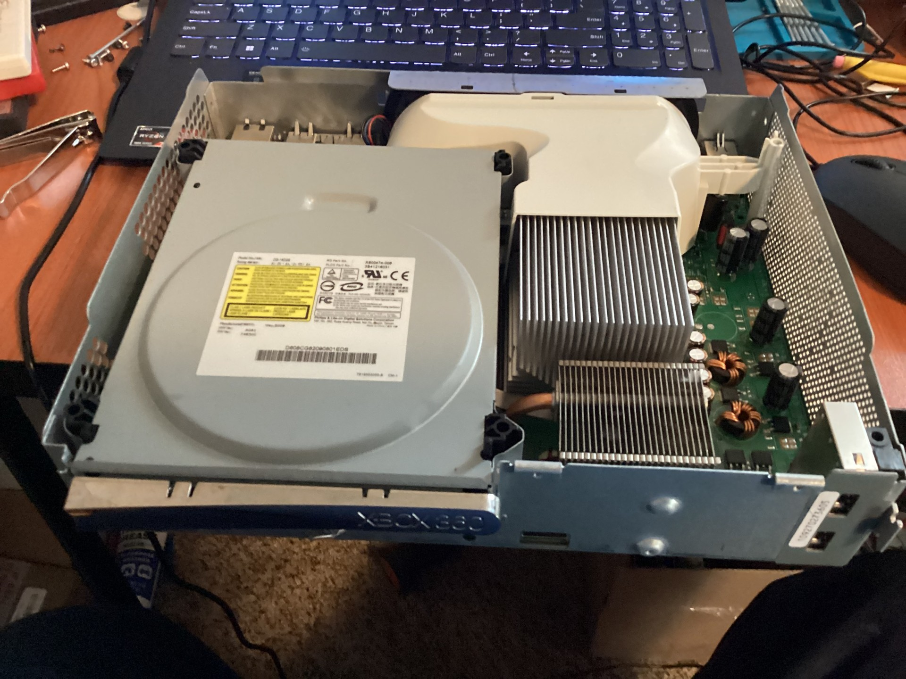

Console Repairs & Restoration
I bring classic consoles back to life with these repairs and full restorations.


This one was my first full repairs for a home console, the legendary Playstation 2! I had to replace a fuse for the fan with a new replacement, as well as buy a new controller port module, on the first picture you can see it had a rough go at it, but the new one is working good!
This Xbox needed capacitor replacement and a new disk drive. After cleaning and repairs, it powered on successfully!

